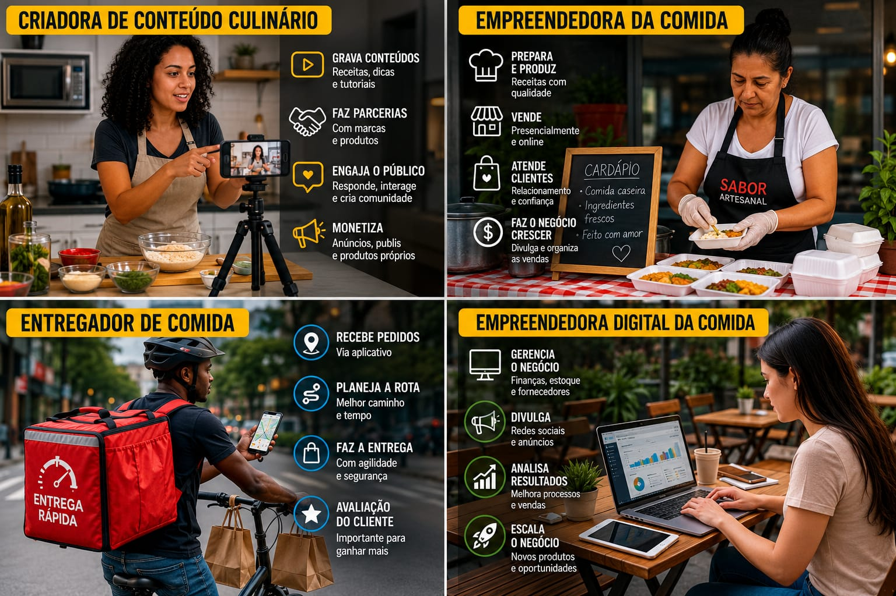

Temas discutidos:
Quem trabalha para que a comida chegue até você?
Muitas pessoas trabalham juntas em uma grande corrente para que a comida chegue até a sua mesa.
Esse processo envolve desde quem planta e colora os alimentos, até quem os entrega no mercado ou na sua casa.
Os principais profissionais envolvidos são:
- Produtores Rurais: agricultores, pescadores e pecuaristas cultivam e criam os alimentos.Indústrias: operários transformam ingredientes crus em produtos embalados.
- Transportadores: motoristas de caminhão e entregadores levam a comida pelo país. Comerciantes: donos de mercados, feirantes e atendentes vendem os alimentos.
- Trabalhadores de Apoio: cientistas agrícolas e fiscais garantem a qualidade dos itens.
Como funcionam trabalhos como influenciadores culinários, entregadores ou pequenos empreendedores da comida?

Os influenciadores culinários, os entregadores e os pequenos empreendedores da comida desempenham papéis importantes no mercado alimentício.
Enquanto os influenciadores divulgam receitas e produtos nas redes sociais, os entregadores garantem que os alimentos cheguem aos clientes com rapidez.
Já os pequenos empreendedores criam e administram seus próprios negócios, oferecendo produtos de qualidade e buscando conquistar consumidores.
- Influenciadores culinários: divulgam receitas, produtos e marcas nas redes sociais.
- Entregadores: realizam a entrega dos pedidos de forma rápida e segura.
- Pequenos empreendedores: produzem, vendem e administram seus próprios negócios no ramo da alimentação.
- Tecnologia: sites e redes sociais ajudam na divulgação e nas vendas dos produtos.
Produzir conteúdo sobre comida também pode ser considerado trabalho?
Criadores de conteúdo sobre comida também podem ser considerados trabalhadores, pois dedicam tempo, esforço e conhecimento para produzir vídeos e publicações.
Além de cozinhar, eles precisam planejar receitas, gravar, editar conteúdos e acompanhar as tendências das redes sociais.
Muitas vezes, essa atividade gera renda e exige uma rotina constante de trabalho.
- Produção de conteúdo: criação de vídeos, fotos e publicações sobre comida.
- Planejamento: escolha de receitas, elaboração de roteiros e organização das gravações.
- Trabalho digital: edição de vídeos, divulgação e interação com o público.
- Geração de renda: ganhos por monetização, parcerias e publicidade.
- Dedicação constante: necessidade de manter frequência nas postagens e acompanhar tendências